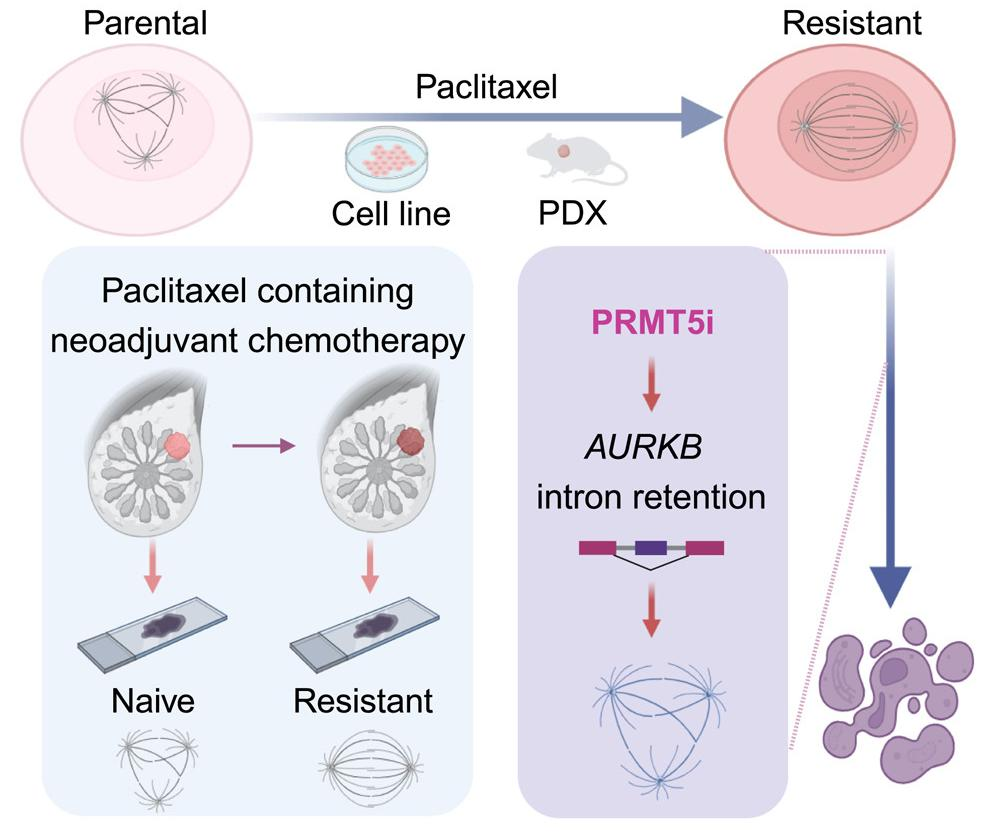

New Therapeutic Targets for TNBC
Triple-negative breast cancer (TNBC) lacks estrogen receptor, progesterone receptor, and HER2 overexpression, making it largely unresponsive to current targeted therapies and prone to rapid progression. While paclitaxel plays a key role in early-stage or metastatic TNBC, most patients develop resistance after 5–7 months of treatment, leading to disease worsening. To address this challenge, a screen of epigenetic small-molecule inhibitor libraries identified protein arginine methyltransferases (PRMTs), which regulate RNA splicing and chromatin stability, as new targets for overcoming paclitaxel resistance. The mechanism involves altered RNA splicing, particularly intron retention of Aurora kinase B (AURKB), leading to reduced protein expression and selective induction of mitotic catastrophe in paclitaxel-resistant cells.
Building on our previous discoveries that RNA splicing regulates innate immune mechanisms in TNBC (Nature Chemical Biology 18, 821–830, 2022; Nature Chemical Biology 18, 795–796, 2022), this study further explored the role of RNA splicing in TNBC drug resistance and provides a new therapeutic strategy. The work, titled “A chemical screen identifies PRMT5 as a therapeutic vulnerability for paclitaxel-resistant triple-negative breast cancer,” was published in Cell Chemical Biology in 2024, with Kejing Zhang, Juan Wei, and Sheyu Zhang as co-first authors.
Based on this innovative platform, our lab was invited by Cell to contribute a methods paper detailing experimental protocols and standardized workflows for PRMT5-targeted therapy. The methods paper was published in STAR Protocols in 2025, with Juan Wei and Sheyu Zhang as co-first authors.
